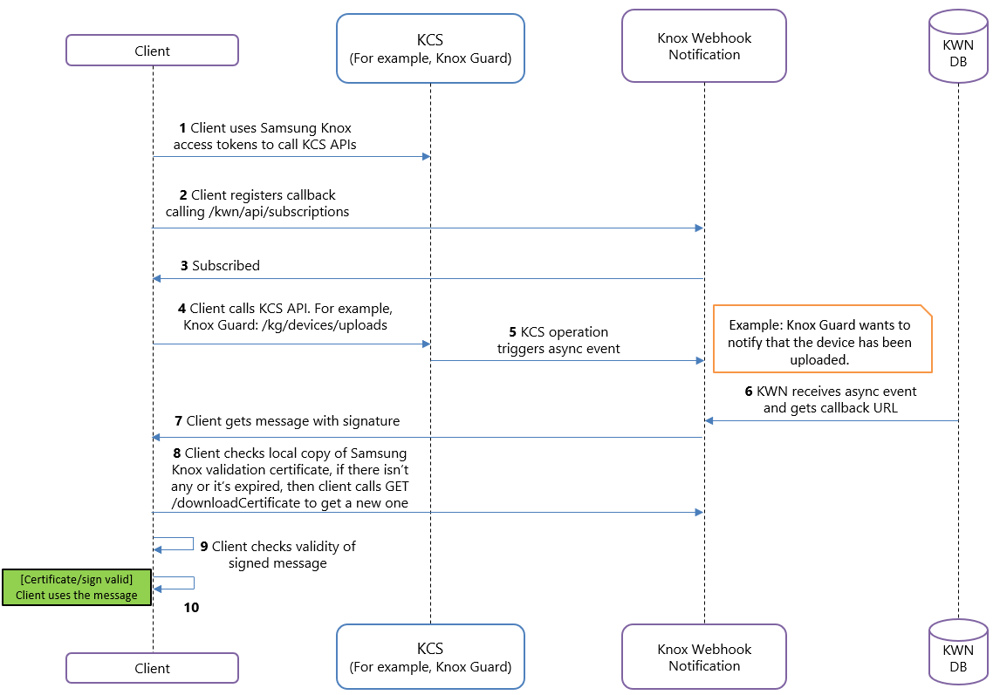

About Knox Webhook Notification
Last updated September 25th, 2024
The Knox Webhook Notification API allows different Knox cloud services to send change notifications to a subscribed client when a subscribed event or background process is complete.
Since most client requests are resource-intensive, Knox Webhook Notification offers the advantage of asynchronous APIs. These APIs run these client events as different background processes, thus freeing up resources for other client events. The asynchronous design allows a client to have multiple subscriptions for all the unique events, either using the same URL across all subscriptions or configuring each subscription URL differently. Such a resource-efficient API workflow allows multiple requests to be handled simultaneously, without any inefficient event dependencies.
To leverage this notification service, a client must first subscribe to the Knox Webhook Notification Subscription API to receive the change notifications whenever an event trigger occurs.
Knox Webhook Notification API workflow
The following procedure summarizes the Knox Webhook Notification API workflow:

-
The client uses Knox Cloud Authentication API access tokens to call different Knox cloud service APIs. Within the Knox Webhook Notification workflow, you are the API client that wants to receive change notifications.
-
The client registers to an event with the Knox Webhook Notification Subscription API. For example, an event could be the enrollment of a device using the Knox Guard device upload operation.
-
The event is now subscribed. A database stores the event subscription and the associated event.
-
The client makes a call to a Knox cloud services API.
-
The completed Knox cloud services operation, through the Knox cloud service APIs, triggers an asynchronous event.
-
Knox Webhook Notification receives the asynchronous event from the Knox cloud services API operation. Then, Knox Webhook Notification performs a database lookup to get the configured callback URL.
-
The client receives the Knox Webhook Notification callback response along with the signature for validation.
-
The client checks for available Samsung Knox validation certificate. If there’s no locally-stored Samsung Knox validation certificate or if it’s expired, then the client calls the GET /downloadCertificate operation to get a new certificate and stores it locally.
-
The client validates the authenticity of the callback response by comparing the signature against the public key contained in the Samsung Knox certificate.
-
Successful validation marks the completion of your request.
Steps 1, 2, and 3 need to be completed only once. However, if your Samsung Knox validation certificate expires, use Step 8 to get a new or updated certificate.
If you would like to learn how to use the Knox Webhook Notification API for Knox Guard, see the Knox Webhook Notification for Knox Guard and Knox Webhook Notification for Knox Asset Intelligence tutorials.
On this page
Is this page helpful?